The system is built together with a bunch of modules to acheive the intended results. Eeach item in a menu is a module to control different aspects of system. Below all the features are explained for what those can do and how you can use these. 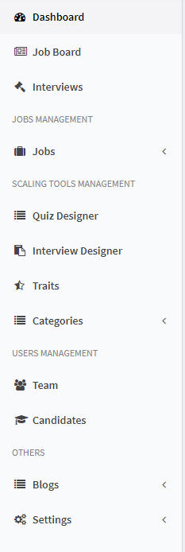
Dashboard
The dashboard gives you summary of the whole system in one picture. It has stats for total jobs, candidates and applications. There are charts and to do list for each team members. Dashboard can be accessed from the main navigation menu via the "Dashboard" item 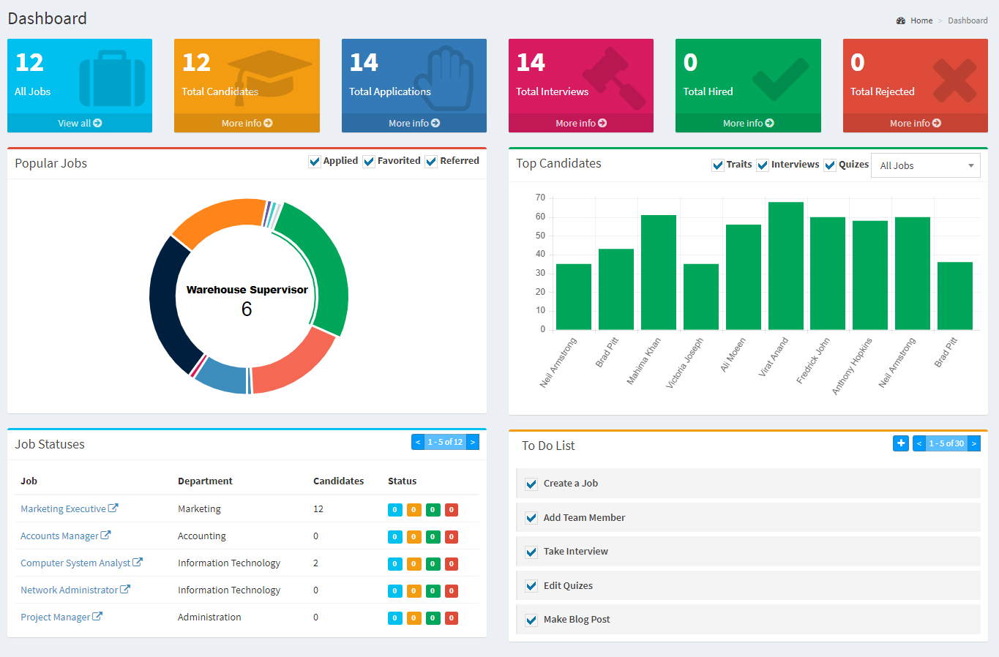
Job Board
The Job Board is a unique feature with which you can do assesement and analysis against the applying candidates for a job.
Left On left is the listing of all jobs. There is search and pagination with which you can filter through jobs. Click on any job title to view applying candidates for that job in the right section.
Right On right is the listing of all candidates who have applied for the selected job. 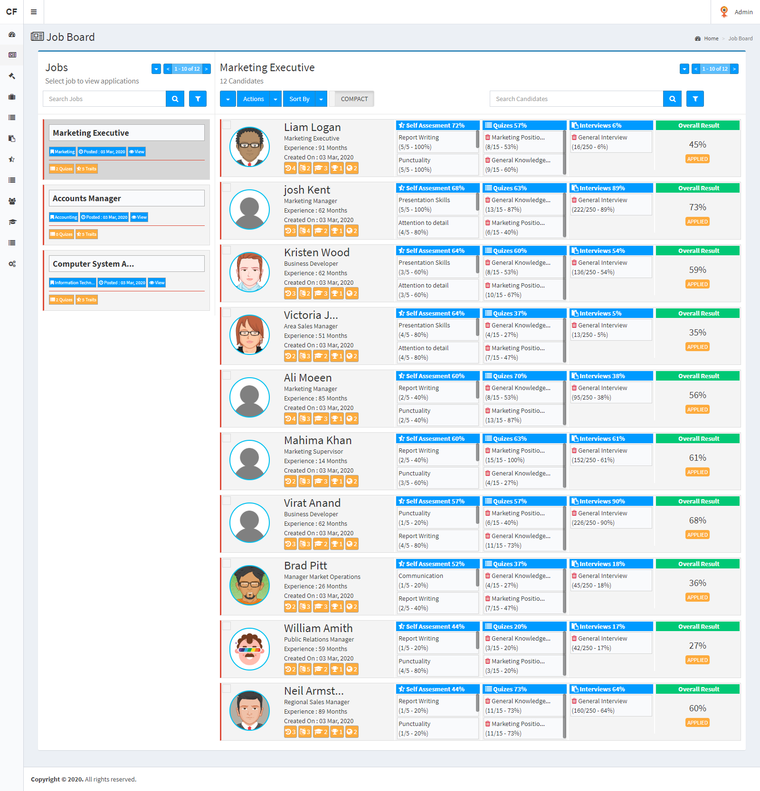
There is a list of actions on right from where you can do several actions like marking candidates as shortilisted or hired. Also you can export their results for interviews or quizes. From here, interviews or quizes can be assigned to selected candidates. For these actions, you need to first select the records and then click on the resepection item in the "Actions Menu".
Team listing is where you can see all the team members on the system with their roles. It can be accessed from the "Team" item in navigation menu. From this page, you can add, edit, delete a member. There are some advance filters integrated in this screen for the ease of use.
Create -> A member can be created by clicking the blue "Add Team Member" button on top in the listing screen. On clicking this, a popup form will appear. Filling all the information will create the member
Update -> If you need to update a member, you can simply do so by clicking the "blue pencil button" on the corresponding member row in the listing screen. On clicking it, a popup form will appear. Filling all the information will update the member
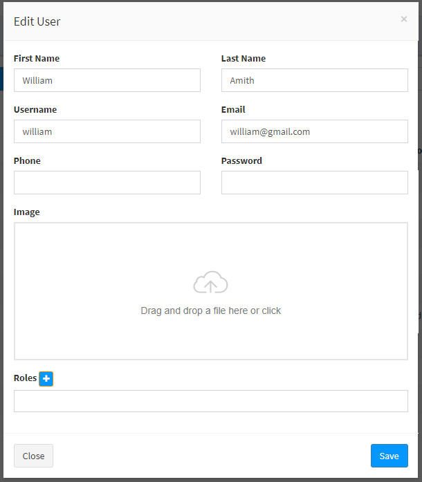
Delete -> If you need to delete a member for some reason, you can simply do so by clicking the "red trash button" on the corresponding member row in the listing screen. On clicking it, a popup screen will appear for confirmation. On confirmation, the member will be permanently deleted.
Activate/Deactivate -> If you need to temporarily block a member from loggin in, you can simply do so by clicking the 'green/red' button in the status column on the corresponding member row in the listing screen. On clicking it, the member will be activated or deactivated. This action is reversible and can be done as many times as you like. Also, this action can be done from the "Bulk Action" option by selecting multiple records at a time.
Role Assignment -> Roles can be assigned to some selected or all team members from the bulk actions feature. To do so, you have to first select some records in the listing screen and then click on 'Assign Role' item in the actions menu. Clicking on the item will open a popup. From there you can select the desired role and assign to all or the selected ones.
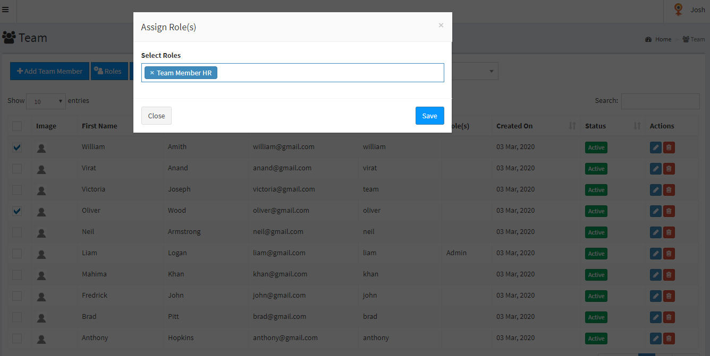
Roles
There are around 70 permissions in the system to control team members access. Multiples roles can be created with all or selected permissions. These roles can then be assigned to team members from the create / edit or bulk action feature in the listing screen.
With the jobs module, you can create as many jobs as you like. Jobs listing shows you all jobs in system with the ability to activate/deactivate a job. It can be accessed from the "Jobs -> Listing" from the navigation menu. There are a number of "Bulk Actions" and advance filters built in this screen to give you an ease of use.
Create -> A job can be created by clicking the blue "Add Job" button on top in the listing screen. On clicking this, you'll be redirected to job creation screen. Fill all the information and click the save button to create the job.
Update -> If you need to update a job, you can simply do so by clicking the "blue pencil button" on the corresponding job row in the listing screen. On clicking it, you'll be redirected to job edit screen. Fill all the information and click on the save button to update the job.
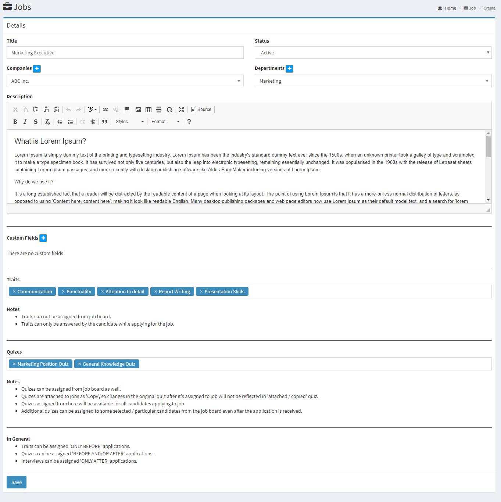
Delete -> If you need to delete a job for some reason, you can simply do so by clicking the "red trash button" on the corresponding job row in the listing screen. On clicking it, a popup screen will appear for confirmation. On confirmation, the job will be permanently deleted.
Activate/Deactivate -> If you need to temporarily deactivate a job, you can simply do so by clicking the 'green/red' button in the 'Status Column' on the corresponding job row in the listing screen. On clicking it, the job will be activated or deactivated. This action is reversible and can be done as many times as you like. Also, this action can be done from the "Bulk Action" option by selecting multiple records at a time.
Filters
Create -> A job filter can be created by clicking the blue "+" button on top in the listing screen. On clicking this, a pop up screen will appear where you can enter title, select type and other preferencecs. Fill all the information and click the save button to create the job filter.
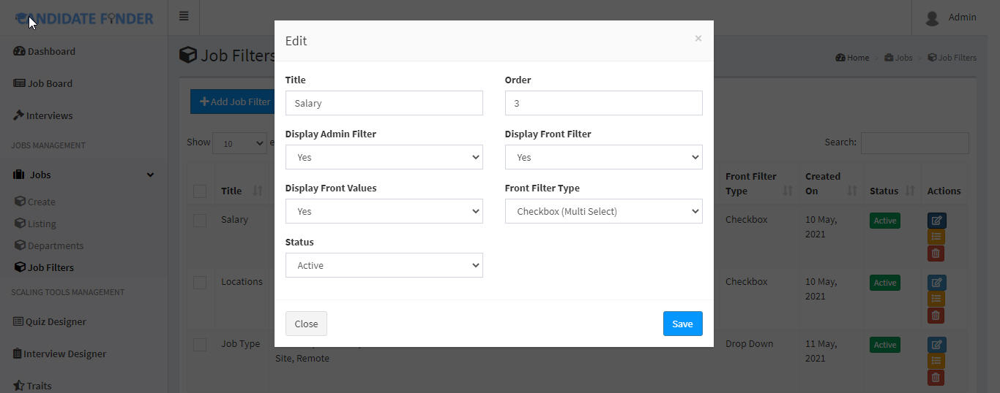
Update -> Then enter values against the created filter.
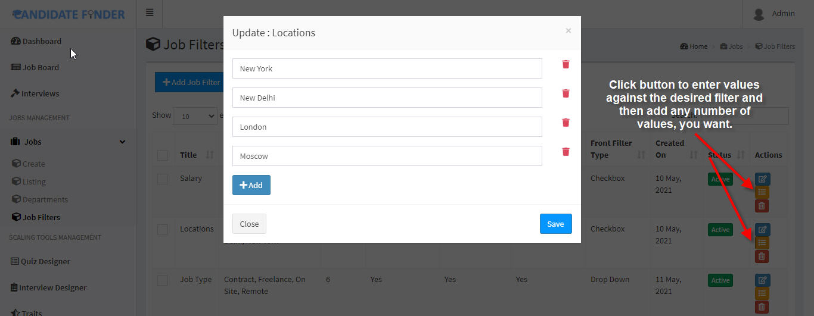
Assign to Jobs -> Once you are done creating filters and their values, you can assign these to jobs as indicated in the below image.
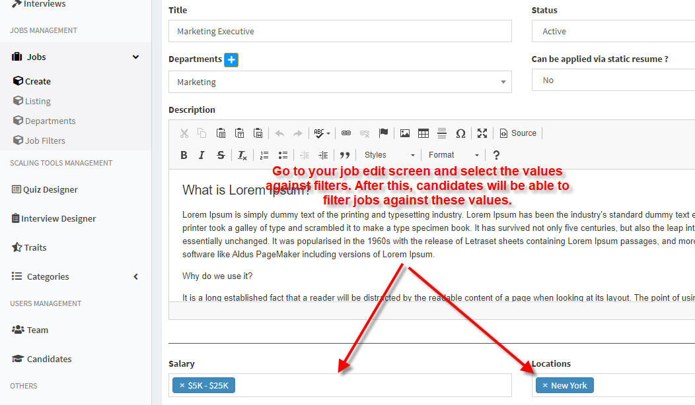
Departments
With the job departments module, you can create as many departments as you like. Departments listing shows you all departments in system with the ability to activate/deactivate. It can be accessed from the "Jobs -> Departments" item in navigation menu. There are a number of "Bulk Actions" bu ilt in this screen to give you an ease of use. These departments will also appear on home page and jobs listing screen on front from where the candidates can filter jobs by department.
Create -> A department can be created by clicking the blue "Add Department" button on top in the listing screen. On clicking this, a popup form will appear. Fill all the information and click on save button to create the department
Update -> If you need to update a department, you can simply do so by clicking the "blue pencil button" on the corresponding department row in the listing screen. On clicking it, the popup form will appear. Fill all the information and click on save button to update the department. 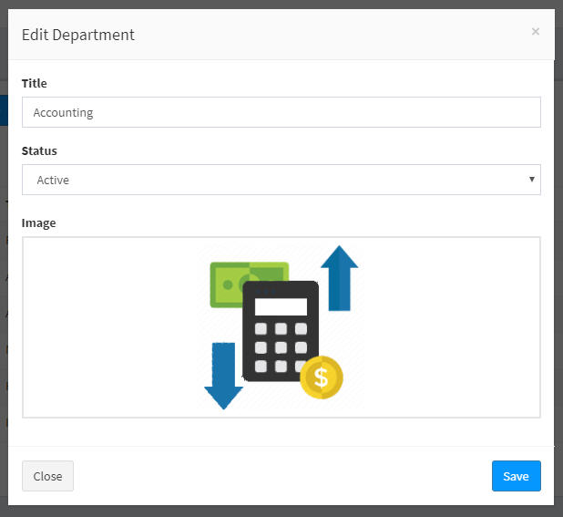
Delete -> If you need to delete a department for some reason, you can simply do so by clicking the "red trash button" on the corresponding department row in the listing screen. On clicking it, a popup screen will appear for confirmation. On confirmation, the job will be permanently deleted.
Activate/Deactivate -> If you need to temporarily deactivate a department, you can simply do so by clicking the 'green/red' button in the 'Status Column' on the corresponding job row in the listing screen. On clicking it, the department will be activated or deactivated. This action is reversible and can be done as many times as you like. Also, this action can be done from the "Bulk Action" option by selecting multiple records at a time.
Companies
With the job companies module, you can create as many companies as you like. Companies listing shows you all companies in system with the ability to activate/deactivate. It can be accessed from the "Jobs -> Companies" item in navigation menu. There are a number of "Bulk Actions" built in this screen to give you an ease of use. The companies will also appear on jobs listing screen on front from where the candidates can filter jobs by company.
Create -> A company can be created by clicking the blue "Add Company" button on top in the listing screen. On clicking this, a popup form will appear. Fill all the information and click on save button to create the company
Update -> If you need to update a company, you can simply do so by clicking the "blue pencil button" on the corresponding company row in the listing screen. On clicking it, the popup form will appear. Fill all the information and click on save button to update the company. 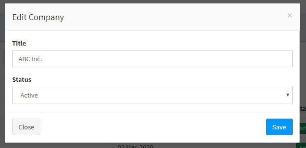
Delete -> If you need to delete a company for some reason, you can simply do so by clicking the "red trash button" on the corresponding company row in the listing screen. On clicking it, a popup screen will appear for confirmation. On confirmation, the job will be permanently deleted.
Activate/Deactivate -> If you need to temporarily deactivate a company, you can simply do so by clicking the 'green/red' button in the 'Status Column' on the corresponding job row in the listing screen. On clicking it, the company will be activated or deactivated. This action is reversible and can be done as many times as you like. Also, this action can be done from the "Bulk Action" option by selecting multiple records at a time.
Quiz Designer screen is a unique one which has two sections
Left
There is question bank from where you can add / edit questions in the system. Questions can be added as "Single Choice" and "Multiple Choice". You just need to click on the "Two Arrow" button besides the "Answers" to switch between single and multi correct. When making "multi correct", you have to select multiple answers as correct, where as whem making "single corect", you have to select single answer as correct. Below you can see the action steps.
Questions -> Add
A new question can be added by clicking the blue "+" button by the "Questions Bank" heading.
The "+ Add" button can be used to add as many options for a question as you like. Similarly the trash icon can be clicked against any answer to be deleted if not needed.
Right
On right of the quiz designer screen is the "Quizes" section where as many quizes can be added by clicking on blue "+" button on top. Following screen will appear when you click the "+" button
Fill all the information and click on "save" button to create quiz. The newly created quiz will appear in the "Select Quiz dropdown". Now when the quiz is selected, any number of questions can be added from the questions bank to the selected quiz by "DRAG AND DROP".
Note : Questions once added to the quiz can also be edited the same way as in the "Questions Bank" section. Editing the questions here will not affect the original questions in the questions bank.
Edit / Delete Quiz
A quiz can be edited or selected by the blue and red buttons besides the quiz drop down.
On right of the interview designer screen is the "Interviews" section where as many interviews can be added by clicking on blue "+" button on top. Following screen will appear when you click the "+" button
Fill all the information and click on "save" button to create interview. The newly created interview will appear in the "Select Interview dropdown". Now when the interview is selected, any number of questions can be added from the questions bank to the selected interview by "DRAG AND DROP".
Note : Questions once added to the interview can also be edited the same way as in the "Questions Bank" section. Editing the questions here will not affect the original questions in the questions bank.
Edit / Delete Interview
A interview can be edited or selected by the blue and red buttons besides the interview drop down.
Interview Conducts
The interviews first created from the "Interview Designer" module, after being assigned from job board against any job to a candidate will appear in the "Interviews" (3rd in the navigation) module. From there, the interviewer to whom the interview is assigned can do the markings against several interview questions.
Once the interview markings are submitted, they will appear on the "Job Board" in the row of that particular candidate against the job.
On clicking the "View/Conduct" button, a modal will appear where the interviewer can enter the marks and comments against all questions.
Note : Interview pdfs can be downloaded from "Interview Designer"
Traits
With the traits module, you can create as many traits as you like. Traits listing shows you all traits in system with the ability to activate/deactivate. It can be accessed from the "Traits" item in navigation menu. There are a number of "Bulk Actions" built in this screen to give you an ease of use.
Create -> A department can be created by clicking the blue "Add Department" button on top in the listing screen. On clicking this, a popup form will appear. Fill all the information and click on save button to create the department
Update -> If you need to update a department, you can simply do so by clicking the "blue pencil button" on the corresponding department row in the listing screen. On clicking it, the popup form will appear. Fill all the information and click on save button to update the department. 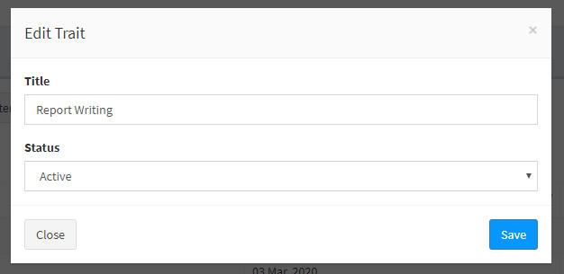
Delete -> If you need to delete a department for some reason, you can simply do so by clicking the "red trash button" on the corresponding department row in the listing screen. On clicking it, a popup screen will appear for confirmation. On confirmation, the job will be permanently deleted.
Activate/Deactivate -> If you need to temporarily deactivate a department, you can simply do so by clicking the 'green/red' button in the 'Status Column' on the corresponding job row in the listing screen. On clicking it, the department will be activated or deactivated. This action is reversible and can be done as many times as you like. Also, this action can be done from the "Bulk Action" option by selecting multiple records at a time.
Question Categories
With the question categories module, you can create as many question categories as you like. Question Categories listing shows you all question categories in system with the ability to activate/deactivate. It can be accessed from the "Question Categories" item in navigation menu. There are a number of "Bulk Actions" built in this screen to give you an ease of use.
Create -> A category can be created by clicking the blue "Add Question Category" button on top in the listing screen. On clicking this, a popup form will appear. Fill all the information and click on save button to create the category
Update -> If you need to update a category, you can simply do so by clicking the "blue pencil button" on the corresponding category row in the listing screen. On clicking it, the popup form will appear. Fill all the information and click on save button to update the category.
Delete -> If you need to delete a category for some reason, you can simply do so by clicking the "red trash button" on the corresponding category row in the listing screen. On clicking it, a popup screen will appear for confirmation. On confirmation, the category will be permanently deleted.
Activate/Deactivate -> If you need to temporarily deactivate a category, you can simply do so by clicking the 'green/red' button in the 'Status Column' on the corresponding category row in the listing screen. On clicking it, the category will be activated or deactivated. This action is reversible and can be done as many times as you like. Also, this action can be done from the "Bulk Action" option by selecting multiple records at a time.
Quiz & Interview Categories
All actions will be same as in the questions categories module.
Settings : Branding
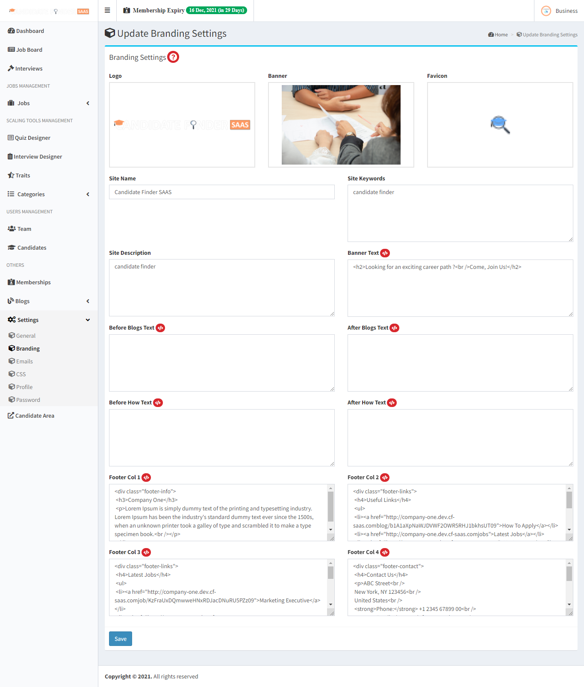
An employer can edit these settings as their branding preferences but for these settings to take effects, branding feature need to be enabled in their current membership.
Settings : Home
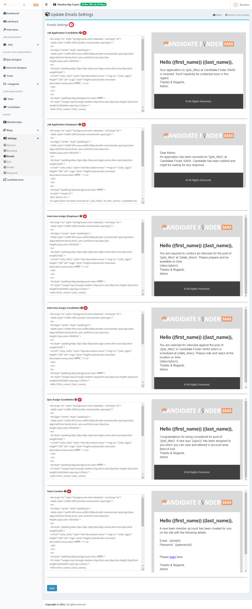
An employer can have custom emails and would be able to edit the template, if they have "Custom Emails" enabled in their membership.
Settings : Css
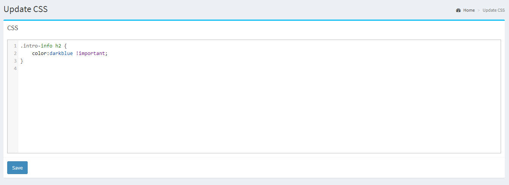
Any custom css can be inserted here like font colors, background images etc. This is for the front end section only. This css will take effect if the employer have Branding enabled in their membership.
{kind=link}
{kind=link}
{kind=link}
{kind=link}
{kind=link}
{kind=link}
{kind=link}
{kind=link}
{kind=link}
{kind=link}
{kind=link}
{kind=link}
{kind=link}
{kind=link}
{kind=link}
{kind=link}
{kind=link}
{kind=link}
{kind=link}
{kind=link}
{kind=link}
{kind=link}
{kind=link}
{kind=link}
{kind=link}
{kind=link}
{kind=link}
{kind=link}
{kind=link}
{kind=link}
{kind=link}